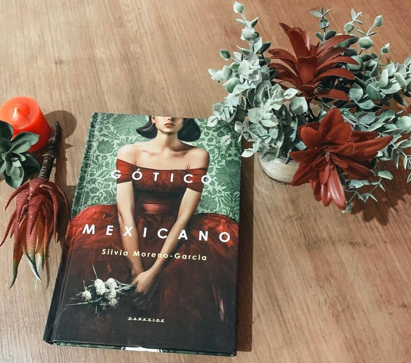

Gótico Mexicano
E aqui vai mais livro que precisamos muito falar sobre. Foi um tiro na minha cara e me surpreendeu de forma positiva porque no início eu pensei que iria tratar apenas de um mistério “comum” e iria mostrar apenas a cultura do México superficialmente… mas, não ! Se você gosta de elementos góticos, um suspense bem estruturado, uma protagonista bem construída e uma história que te envolve do começo ao fim esse livro é perfeito.
Noemí Taboada é uma jovem independente e chique que mora na fervilhante Cidade do México. Entre as manhãs de estudo na faculdade e as noites glamourosas de festas e bailes, ela gosta de passear em seu carro conversível, ouvir música e sonhar com um futuro onde as mulheres possam fazer suas próprias escolhas ― e viver grandes aventuras. A rotina de Noemí muda drasticamente quando seu pai recebe uma carta de sua prima Catalina, recém-casada com um inglês. A carta é, na verdade, um pedido desesperado de socorro, pois Catalina acredita que corre perigo em High Place, a mansão isolada onde vive confinada com o marido e a família dele. Convocada a investigar o mistério na cidadezinha de El Triunfo, Noemí parte com seu batom vermelho e uma dose extra de coragem. Mas nem mesmo nossa intrépida heroína estava preparada para os horrores que a esperavam em uma mansão assombrada por um mal abominável. (Resenha oficial)
A autora ainda que de uma forma sutil aborda assuntos como xenofobia, influência nociva do patriarcado, questões raciais e relacionamentos abusivos. E o que achei mais legal foi a desconstrução feita pela autora da representação caricatural dos personagens latinos que, segundo ela mesma disse, “em geral são representados como imigrantes sofridos e incultos”.
A mansão toda construída em estilo vitoriano quase vira um personagem e é parte essencial da trama que vai te prendendo do começo ao fim ! Nossa protagonista é determinada e bem à frente do seu tempo. E acreditem, tudo se mostra essencial para o desenrolar da trama!